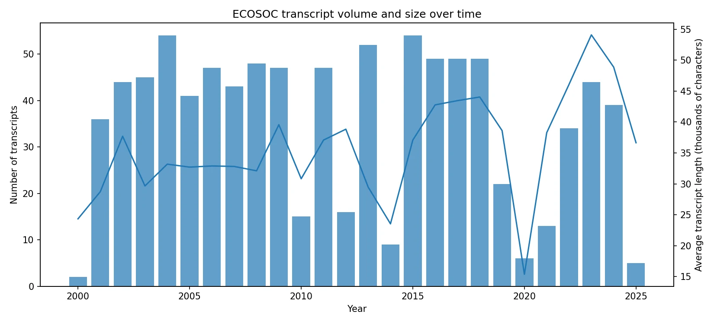
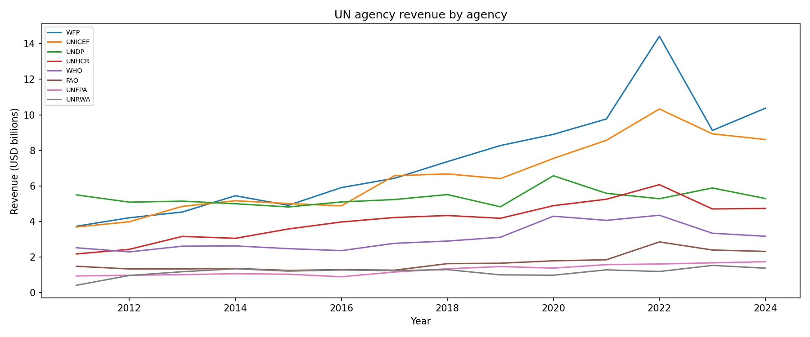
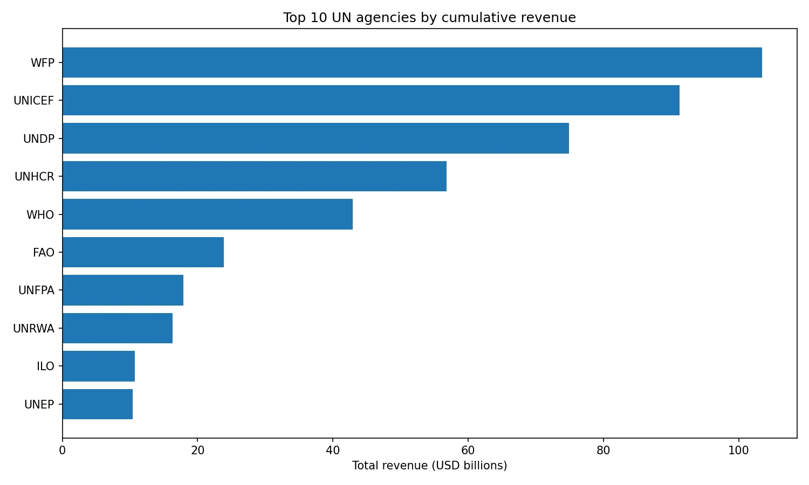
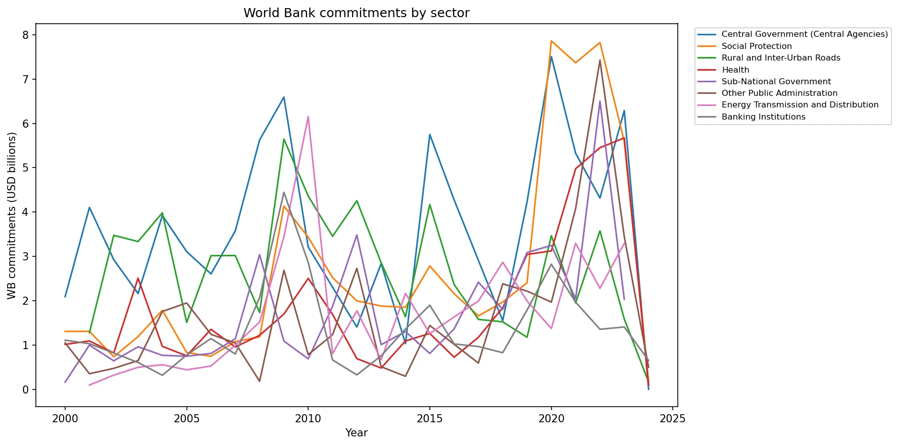
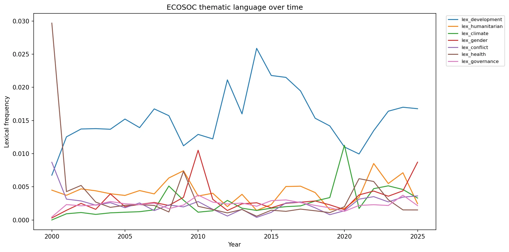
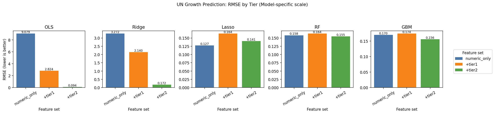
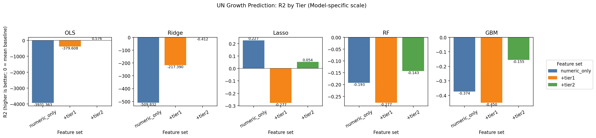

Overview
Institutions say a great deal. Money says more.
International bodies publish their priorities constantly, in speeches, communiqués and summary records. Whether those stated priorities have any relationship to where money actually moves is an empirical question, and one that 26 years of ECOSOC transcripts paired with agency revenue and World Bank lending can answer.
Three questions
- Alignment. Do the themes ECOSOC emphasises in a given year line up with that year's funding allocations?
- Prediction. Do text features improve prediction of UN agency revenue over macro controls alone?
- Comparison. Does ECOSOC discourse track UN-internal spending more closely than World Bank lending?
The corpus
Roughly 1,200 summary records were harvested from the UN Digital Library covering 2000 to 2026. Transcript count stays broadly stable year to year, but transcript length grows substantially, which matters for any feature that scales with document size.

What the money does
Two independent funding series sit alongside the text: CEB Financial Statistics for UN agency revenue, and the World Bank Projects API for sector-level lending.




Feature tiers
Text is cleaned with a boilerplate filter, sentence split, and aggregated into year and segment blocks. Features are then built in tiers so each tier's marginal contribution can be isolated rather than entangled.
Tier 2 → TF-IDF over 2,000 unigrams and bigrams
Tier 3 → all-MiniLM-L6-v2 mean-pooled sentence embeddings
Why hyperparameters are frozen
Five model classes are fit against each feature set with hyperparameters held fixed across tiers on purpose. The goal is a clean ablation showing what the text adds, not a tuned leaderboard. Letting each tier retune would confound "more features" with "better search".
Result
Adding text features produces a large, monotonic drop in out-of-sample error on the UN revenue target. For OLS the fall is from 9.079 to 2.824 to 0.094 across the three feature sets, a total reduction of 8.985 and the largest tier gain of any model class.


The caveat worth stating
An RMSE of 0.094 on a small annual panel is a striking number, and small panels invite overfitting no matter how carefully the ablation is set up. The finding to take away is the direction and size of the tier gain, not the decimal.